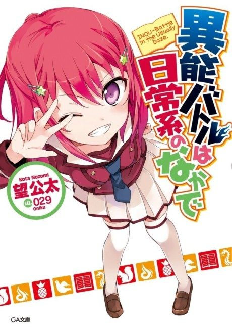

When Supernatural Battles Became Commonplace
異能バトルは日常系のなかで
The anime takes the story to Not checked.
6.7AniList score
—Animeter, no votes yet
12episodes
Anime finished. Where does the story pick up?
StatusNot checked yet
We haven't checked where the anime ends in the light novel yet. The light novel is 118 chapters, finished.